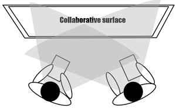
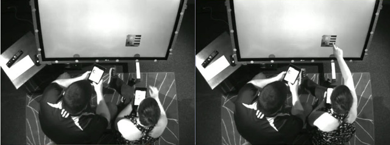

We are developing new methods for cross-surface interaction, that is interaction across interactive surfaces. Embodied cognition is key.
We inform interaction through culturally based design, a method that draws from the embodied experiences of activities embedded in culture. By mimicking well-established activities, affordances activate people's embodied mental models. This makes interaction intuitive and familiar, by drawing from human experience (Heidegger's engaged familiarity). Our culturally based designs draw fromcontexts, such as card play.
Our long term objective is to give people interactive experiences in which embodied gestures performed by the human hand are mapped to actions in ways that are natural, meaningful and intuitive.
publications
 Kerne, A., Hamilton, W., Toups, Z.,
Culturally Based Design: Embodying Trans-Surface Interaction in Rummy,
Proc CSCW 2012, 509-518 [top 9%].
http://dx.doi.org/10.1145/2145204.2145284
Kerne, A., Hamilton, W., Toups, Z.,
Culturally Based Design: Embodying Trans-Surface Interaction in Rummy,
Proc CSCW 2012, 509-518 [top 9%].
http://dx.doi.org/10.1145/2145204.2145284